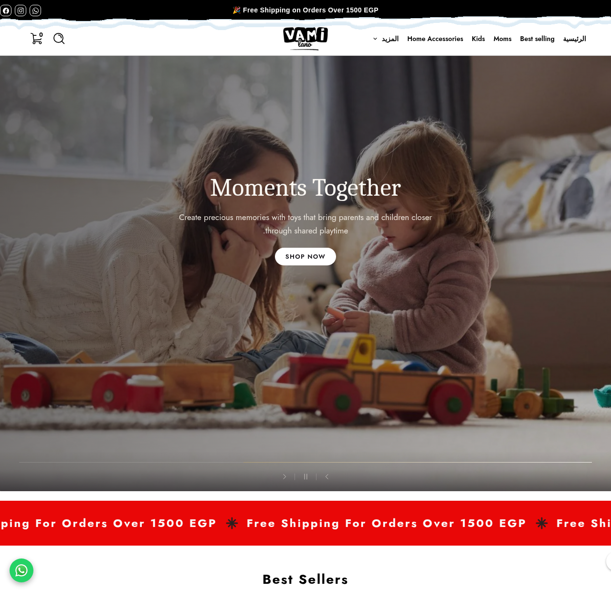

متجر فاميلانو
هوية بصرية ومتجر إلكتروني راقٍ لمستلزمات الأطفال والأمهات.

المطلوب
طلب العميل شعارًا وهوية بصرية متكاملة، إلى جانب متجر إلكتروني احترافي على Easy Order متخصص في مستلزمات الأطفال والحمل والولادة واحتياجات الأمهات.
كان المطلوب علامة راقية تخاطب عملاء يبحثون عن الجودة والتميّز، وتجربة شراء سهلة وواضحة من أول زيارة حتى إتمام الطلب.
ما نفّذته
- هوية بصرية بلوحة ألوان تعتمد الأسود مع الخلفيات البيضاء لإبراز الطابع الفاخر للعلامة
- عرض كل منتج بشكل مستقل ومنظم مع الاهتمام بالتفاصيل البصرية
- معلومات واضحة وتنقّل سهل يساعدان على اتخاذ قرار الشراء
- تجربة رقمية متكاملة تجمع بين قوة الهوية وسهولة الاستخدام